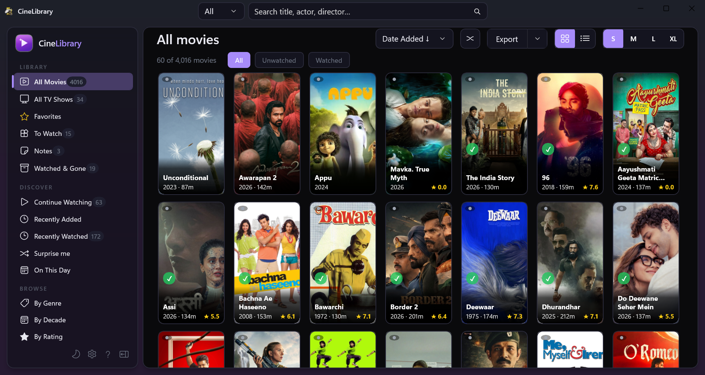

Native Windows catalog for your MediaElch-scraped movies and TV shows. Browse, search, filter, and play across any number of external drives. Fast, offline, portable.

A release shaped by user feedback: TV shows in season folders now work, you can pick your own video player, and two smaller fixes.
Season 01, Season 02, Specials) used to show 0 seasons. Episodes, their .nfo details and thumbnails are now read from season folders as well as from the show folder itself. That's also the layout CineLibrary Essentials writes.CineLibrary-Data. Installing 3.6.0 removes it..nfo, so the drive stays the source of truth and a rescan can't lose your fill-ins.WinUI 3 + C#. Cold start under a second. Scrolling through 1,000+ posters stays smooth thanks to an LRU image cache.
Index a USB drive, unplug it, and its movies fade to "offline" instead of vanishing. Plug it back in and they wake up via WM_DEVICECHANGE.
Reads .nfo + poster/fanart files alongside your videos. No re-scraping, no duplicate metadata.
Install anywhere: external drive, USB stick, Documents. Library data lives next to the exe. No telemetry.
Theme-aware design, follows system theme by default. Mica backdrop on Windows 11.
Checks GitHub for new releases on startup. Shows a quiet toast. It never installs silently and never nags.